This Cataclysm Classic Fishing and Cooking leveling guide will show you the fastest way to level Fishing and Cooking from 1 to 525 in WoW Cataclysm Classic.
Since leveling your fishing takes a long time, leveling these professions together is best. You'll discover that it requires a lot of patience and time to build your skill level to the maximum. You will have to catch a lot of fish from start to finish.
I recommend trying Zygor's 1-85 Leveling Guide if you are still leveling your character or you just started a new alt. The guide will help you to reach level 85 a lot faster.
Level Fishing to 75
- Go to Bloodhoof Village in Mulgore and learn Cooking from Pyall Silentstride.
- Buy
 Recipe: Brilliant Smallfish and Recipe: Longjaw Mud Snapper from Harn Longcast
Recipe: Brilliant Smallfish and Recipe: Longjaw Mud Snapper from Harn Longcast - Buy a
 Fishing Pole, 5x
Fishing Pole, 5x  Bright Baubles and 5x
Bright Baubles and 5x  Shiny Bauble from Harn Longcast.
Shiny Bauble from Harn Longcast. - Learn Fishing from Uthan Stillwater.
- Equip your fishing pole, attach a Shiny Bauble, and fish from Stonebull Lake until your fishing skill reaches 75. You will catch about 60
 Raw Brilliant Smallfish and some
Raw Brilliant Smallfish and some  Raw Longjaw Mud Snapper.
Raw Longjaw Mud Snapper. - Learn Journeyman Fishing from Uthan Stillwater.
- Go to Goldshire in Elwynn Forest and learn Cooking from Tomas. He is the cook inside the Lion's Pride Inn kitchen.
- Buy Recipe: Brilliant Smallfish and Recipe: Longjaw Mud Snapper from Tharynn Bouden
- Buy a Fishing Pole, 5x Bright Baubles and 5x Shiny Bauble from Tharynn Bouden.
- Learn Fishing from Lee Brown. He is at the lake east of Goldshire.
- Equip your fishing pole, attach a Shiny Bauble and fish from any lake near Goldshire until your fishing skill reaches 75. You will catch about 60 Raw Brilliant Smallfish and some Raw Longjaw Mud Snapper.
- Learn Journeyman Fishing from Lee Brown.
Fishing: 75-150 | Cooking: 1-125
-
Go to Thunder Bluff and fish in the pond near Thunder Bluff's auction house until your skill reaches 150. You don't have to use any lures.
-
You should catch about 20
Raw Brilliant Smallfish, 50 Raw Longjaw Mud Snapper, and 20  Raw Bristle Whisker Catfish.
Raw Bristle Whisker Catfish. -
Learn Expert Fishing from
 Kah Mistrunner.
Kah Mistrunner.
Cooking
-
Learn the recipe
Recipe: Brilliant Smallfish, and cook all your fish. This should take your cooking skill above 50. Stop making them at 65 if you caught too many and sell the rest at the Auction House. -
Learn Journeyman Cooking from Aska Mistrunner. Then learn
Recipe: Longjaw Mud Snapper, and cook all your Longjaw Mud Snapper. Your cooking skill should rise to above 100. (the precise number is not important). -
Buy the
Recipe: Bristle Whisker Catfish from Naal Mistrunner in Thunder Bluff.
-
Fish in the canals of Stormwind City until your skill reaches 150. You don't have to use any lures.
-
You should catch about 20
Raw Brilliant Smallfish, 50 Raw Longjaw Mud Snapper, and 25 Raw Bristle Whisker Catfish. -
Learn Expert Fishing from
 Arnold Leland.
Arnold Leland.
Cooking
-
Find Catherine Leland in Stormwind City and buy
Recipe: Bristle Whisker Catfish. -
Learn the recipe
Recipe: Brilliant Smallfish and cook all your fish. This should take your cooking skill above 50. Stop making them at 65 if you caught too many and sell the rest at the Auction House. -
Learn Journeyman Cooking from Stephen Ryback in Stormwind City. Then learn
Recipe: Longjaw Mud Snapper, and cook all your Longjaw Mud Snapper. Your cooking skill should rise to above 100. (the precise number is not important).
Fishing: 150-215 | Cooking: 125-150
-
Horde: Fly to Sun Rock Retreat in Stonetalon Mountains, fish in the small lake there until 215.
Alliance: Fly to Redridge Mountains, fish in Lake Everstill until 215.
-
You will catch around 35x
Raw Longjaw Mud Snapper and 70x Raw Bristle Whisker Catfish. Cook the
Raw Longjaw Mud Snapper. Your cooking skill will rise to about 115.Learn
Recipe: Bristle Whisker Catfish and then cook all your fish. Your cooking skill must reach at least 150.Go back to Thunder Bluff / Stormwind City and learn Expert Cooking from
Aska Mistrunner / Stephen Ryback.
Fishing: 215-275 | Cooking: 150-175
-
Learn Artisan Fishing from
Kah Mistrunner / Arnold Leland in Thunder Bluff / Stormwind City. Go to Dustwallow Marsh and fish from 215 to 275 in any of the small patches of water scattered around in the zone. Do not fish in the ocean or any coastal water!
225 fishing skill is required to stop catching junk here, so you should use a
Shiny Bauble until you reach 225.You will catch around 40x
Raw Bristle Whisker Catfish and 70x  Raw Mithril Head Trout.
Raw Mithril Head Trout.Cook all your
Raw Bristle Whisker Catfish. Your cooking skill must reach at least 175. If you did't reach 175 cooking skill, catch more fish. The recipe will be "green", so skills-up very slowly and unreliably.
Cooking: 175-225
-
Go to Rachet, then use the boat there to go to Booty Bay in Stranglethorn Vale.
Find Kelsey Yance in Booty Bay. He is in the large building at the end of the ship dock in Booty Bay. Enter the building and make an immediate left.
Buy these two recipes:
Recipe: Mithril Head Trout, Recipe: Filet of Redgill.Learn
Recipe: Mithril Head Trout and start cooking Mithril Head Trout.- Your Cooking skill should rise to 200.
Learn Artisan Cooking from Mrs. Gant. She's in a building in the bottom level of Booty Bay. Turn left on the small ramp that leads to the bottom level.
Learn Master Fishing from Myizz Luckycatch. You can find him right under the big shark in Booty Bay. (close to the Inn)
{kind=link}
Fishing: 275-310 | Cooking: 225-250
-
Travel to Feralas and buy
Recipe: Baked Salmon from Sheendra Tallgrass / Vivianna. 300 fishing skill is required to stop catching junk here, so you should use a
Shiny Bauble until you reach 300.Fish in the marked river until you reach Fishing 310 . The other lakes and rivers have lower level fish so make sure you fish in this one.
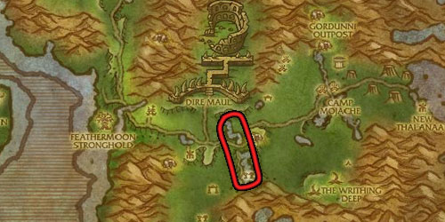
Cook any remaining
Mithril Headed Trout.Learn
Recipe: Filet of Redgill and make as many as you can.Your cooking skill must reach at least 250.
- Horde: Visit your cooking trainer Aska Mistrunner in Thunder Bluff
Alliance: Visit your cooking trainer Craig Nollward in Dustwallow Marsh.
Learn
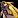
Poached Sunscale Salmon and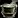
Nightfin Soup from the trainer.
Fishing: 310-330 | Cooking: 250-300
-
Go to Un'Goro Crater and fish in any water until 330.
375 fishing skill is required to stop catching junk here, so you should use
Bright Baubles.- Make as many Poached Sunscale Salmon and Nightfin Soup as you can. Your cooking skill should rise to about 285.
Learn
Recipe: Baked Salmon and cook  Baked Salmon until Cooking 300. You can sell any remaining Fish at the Auction House.
Baked Salmon until Cooking 300. You can sell any remaining Fish at the Auction House.
Fishing: 330-365 | Cooking: 300-350
Fishing to 365
Go to the small lake next to the graveyard outside the eastern exit from Shattrath City, then Fish in Terokkar Forest until fishing skill 365. Keep using  Bright Baubles. If you are out of lures, you can buy them from Ernie Packwell in Shattrath City.
Bright Baubles. If you are out of lures, you can buy them from Ernie Packwell in Shattrath City.
You can fish in other places, but don't go to flying-restricted areas or the big lake near Shattrath City because they require a lot higher fishing skill, and you will get more junk!
You should catch at least 15x  Golden Darter, 50x
Golden Darter, 50x  Barbed Gill Trout, and 10x
Barbed Gill Trout, and 10x  Spotted Feltail.
Spotted Feltail.

Cooking to 350
-
Buy
Recipe: Golden Fish Sticks from Innkeeper Biribi / Rungor. Travel to Cenarion Refuge in Zangarmarsh. Learn Master Cooking from Naka in the inn.
Buy
Recipe: Feltail Delight from Zurai / Doba (read the "Kurenai Reputation" at the bottom of this section below if you can't talk to Doba)Buy
Recipe: Blackened Trout from Gambarinka / Doba.Learn
Recipe: Feltail Delight and cook all your fish.Learn
Recipe: Blackened Trout and cook  Blackened Trout until 320
Blackened Trout until 320Go back to Cenarion Refuge in Zangarmarsh. Learn
 Stewed Trout from Naka in the inn and Cook all the remaining Trout as Stewed Trout.
Stewed Trout from Naka in the inn and Cook all the remaining Trout as Stewed Trout.Learn
Recipe: Golden Fish Sticks, then cook all your  Golden Darter. Your cooking skill will be around 350.
Golden Darter. Your cooking skill will be around 350.
Kurenai Reputation
Alliance characters start as 'Unfriendly' with the Kurenai, so you can't buy recipes from  Doba if you haven't completed any quests in Zangarmarsh yet.
Doba if you haven't completed any quests in Zangarmarsh yet.
- Talk to Ikuti at the Orebor Harborage. Pick up
 Ango'rosh Encroachment and Daggerfen Deviance from him.
Ango'rosh Encroachment and Daggerfen Deviance from him. - Interact with the Wanted Poster near Ikuti and pick up the Wanted: Chieftain Mummaki quest. (if you face him, the poster is to your left)
- Completing these 3 quests will give you enough reputation to reach Neutral with the Kurenai faction then Doba will sell you his cooking recipes.
Fishing: 365-475 | Cooking: 350-415
-
Travel to Vengeance Landing in Howling Fjord and learn Grand Master cooking from
Thomas Kolichio. Learn
 Dalaran Clam Chowder,
Dalaran Clam Chowder,  Smoked Rockfin, and
Smoked Rockfin, and  Baked Manta Ray from the Cooking trainer.
Baked Manta Ray from the Cooking trainer.Train Grand Master Fishing from
Angelina Soren. She is on the dock.Fish from 365 to 475 next to the fishing trainer. Keep using
Bright Baubles.Train Illustrious Fishing between fishing skill 425 and 450.
Cook the Rockfin Grouper into
Smoked Rockfin. Your cooking skill should rise to about 375.Cook all your Imperial Manta Ray into
Baked Manta Ray and Succulent Clam Meat (open  Darkwater Clams) into Dalaran Clam Chowder. Your cooking skill must rise to at least 400.
Darkwater Clams) into Dalaran Clam Chowder. Your cooking skill must rise to at least 400.Return to the cooking trainer. Learn
 Black Jelly and cook all your Borean Man O' War. This should take your cooking skill to about 415.
Black Jelly and cook all your Borean Man O' War. This should take your cooking skill to about 415.
Travel to Valiance Keep in Borean Tundra and learn Grand Master cooking from
Rollick MacKreel.Learn
Dalaran Clam Chowder, Smoked Rockfin and Baked Manta Ray from the Cooking trainer.Train Grand Master Fishing from
Old Man Robert (he is next to the cooking trainer).Fish within the dock area of Valiance Keep from 365 to 475. Keep using
Bright Baubles. If you start catching  Bonescale Snapper, you are in the wrong place.
Bonescale Snapper, you are in the wrong place.Train Illustrious Fishing between fishing skill 425 and 450.
Cook the Rockfin Grouper into
Smoked Rockfin. Your cooking skill should rise to about 375.Cook all your Imperial Manta Ray into
Baked Manta Ray and Succulent Clam Meat (open Darkwater Clams) into Dalaran Clam Chowder. Your cooking skill must rise to at least 400.Return to the cooking trainer. Learn
Black Jelly and cook all your Borean Man O' War. This should take your cooking skill to about 415.
Cooking: 415-450
415 - 440
Learn Darkbrew Lager from the the cooking trainer.
50x Darkbrew Lager - 100x 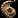 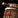
You can buy the Skin of Dwarven Stout and the Jug of Badlands Bourbon from these vendors:
- Innkeeper Firebrew in Ironforge. (Alliance)
- Julia Gallina in Stormwind City. (Alliance)
- Sarah Brady in Dalaran.
- Nixxrax Fillamug in Booty bay.
440 - 450
Learn 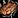
10x Blackened Surprise - 10x 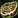
Cooking Daily Quest and Recipes
From this point, every recipe will be purchased with Chef's Award. This currency is rewarded for completing daily cooking quests for  Marogg in Orgrimmar and for
Marogg in Orgrimmar and for  Robby Flay in Stormwind City.
Robby Flay in Stormwind City.
Once you have enough awards, you can buy recipes from  Shazdar in Orgrimmar and Bario Matalli in Stormwind City. One recipe usually costs 3x Chef's Award
Shazdar in Orgrimmar and Bario Matalli in Stormwind City. One recipe usually costs 3x Chef's Award
You will need to buy the following 3 recipes. The order does not really matter, you will need all of them to reach 525. You can also buy other recipes if you have a lot of Chef's Award, so you can cook your other fishes that you might catch.
- (450)
 Recipe: Lightly Fried Lurker or Recipe: Lurker Lunch
Recipe: Lightly Fried Lurker or Recipe: Lurker Lunch - (475) Recipe: Pickled Guppy
- (500) Recipe: Delicious Sagefish Tail or Recipe: Baked Rockfish
Fishing: 475-510 | Cooking: 450-500
-
Train Illustrious Cook from the cooking trainer and learn the next rank of Fishing if you didn't already.
-
Go to the Verrall River or lake in Twilight Highlands.
-
Fish inland open water in the Twilight Highlands until you have caught at least 50x
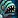
Striped Lurker and 25x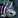
Highland Guppy. -
Cooking 450 to 480: Lightly Fried Lurker or
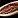
Lurker Lunch -
Cooking 480 to 500:
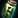
Pickled Guppy
Fishing: 510-525 | Cooking: 500-525
-
Learn
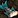
Delicious Sagefish Tail or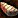
Baked Rockfish. -
Travel across the Twilight Highlands to find coastal water and fish there. You will catch Murglesnout,
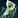
Deepsea Sagefish and Algaefin Rockfish.
Algaefin Rockfish. Catch a few fish and then Cook them. Keep fishing until your Cooking skill reaches 525. The last few skill points will come very slowly.
-
525 fishing skill will take many more catches than 525 cooking. Once you have reached the maximum cooking skill, you can continue to raise your fishing skill anywhere, even in Orgrimmar or Stormwind.
Congratulations on reaching 525! Please send feedback about the guide if you think there are parts I could improve, or you found typos, errors, wrong material numbers!